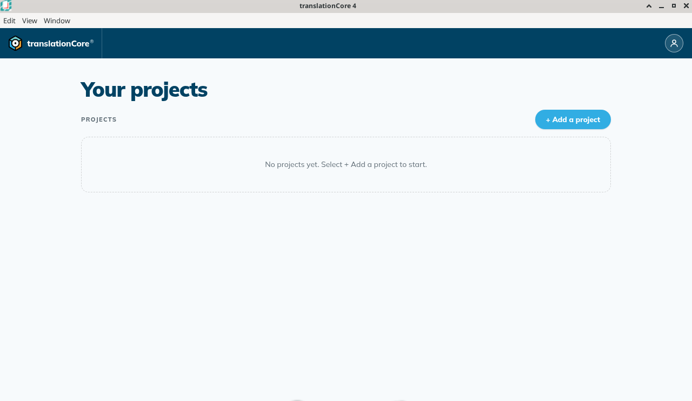
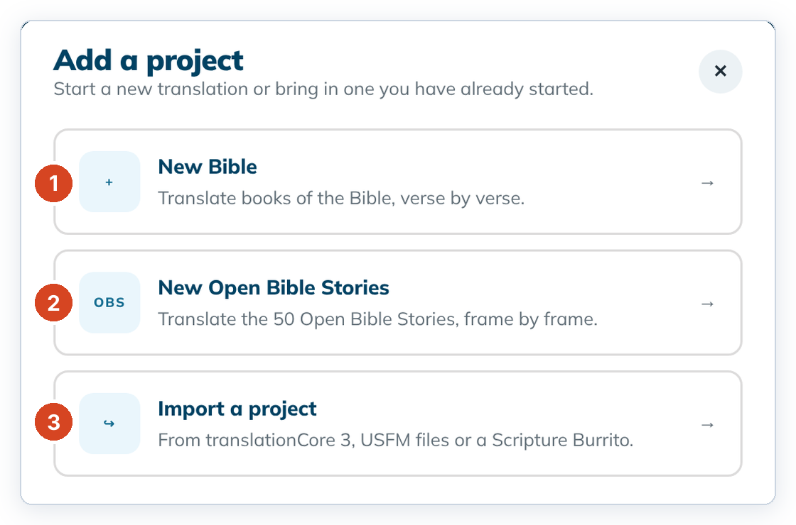
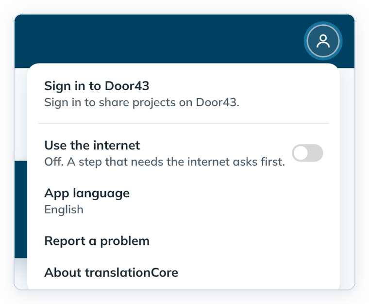
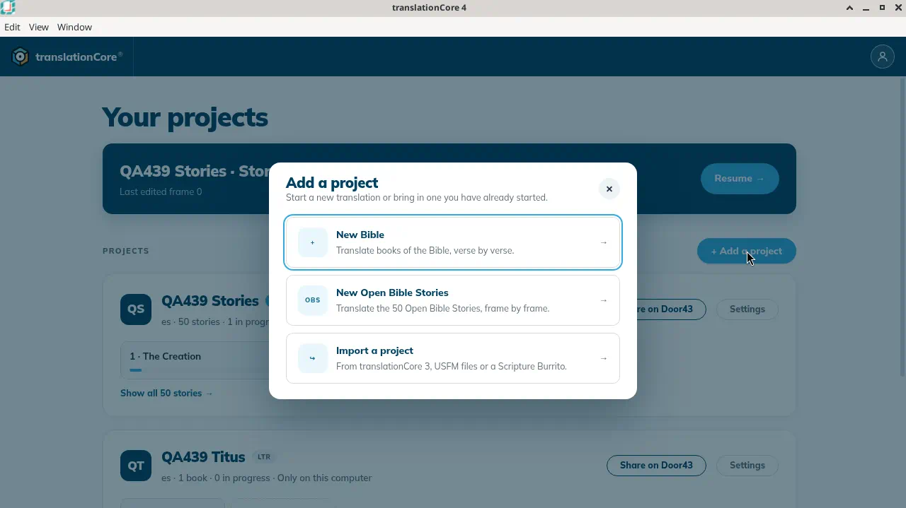
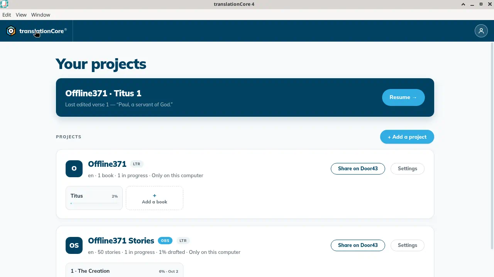
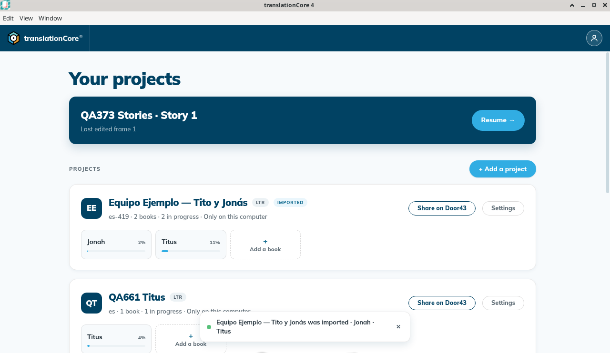
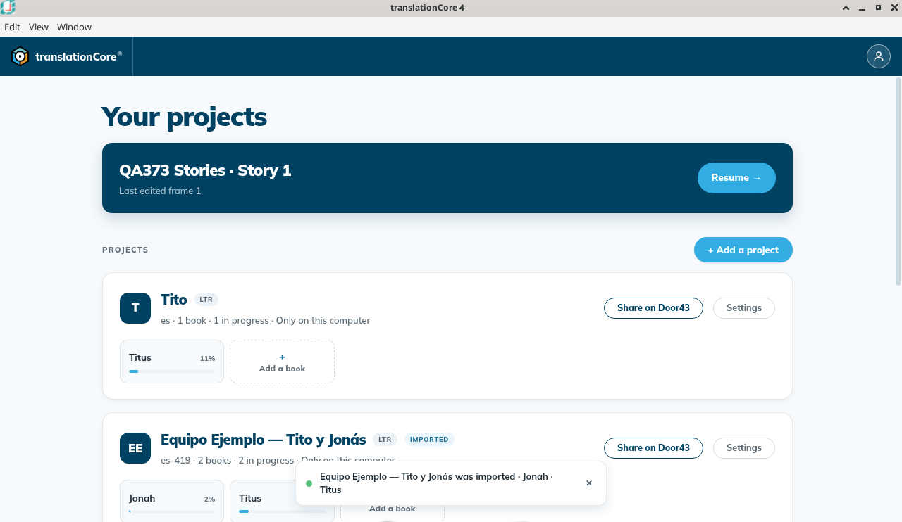

The Home screen
Home lists your projects, most recently used first. From here you open a book or story, add a project with + Add a project, share a project to Door43, and open its Settings.
Where in the app: Home — the first screen. Click the tC4 logo, or the project name in the top bar, to come back to it.
What it is
Home is where you start. At the top is the heading Your projects. The top bar on Home has only the tC4 logo on the left and the round Door43 account icon on the right.
Below the heading, Home shows:
- The Resume banner: the project, book and chapter (or story) you last edited, and what you last edited, for example Sample Titus · Titus 1 and Last edited verse 3 — "y a su tiempo". Click it or Resume → to go back. See Resume where you left off.
- + Add a project on the right, above the list.
- The project list, with the project you used most recently at the top.
- The Door43 account is the person icon at the upper right, on Home and inside a project. When nobody is signed in, its name is Door43 account: not signed in. See Share to Door43.
A project card
Each project is one card:
- The name, for example Sample Titus, with a LTR or RTL badge for the text direction. An Open Bible Stories project also has an OBS badge. A project you just imported has an Imported badge.
- A line under the name with the language code, the number of books, how many are in progress, and where the project lives. For example: "es · 1 book · 1 in progress · Only on this computer". A stories card says "es · 50 stories · 1 in progress · 1% drafted · Only on this computer". The line shows the language code (es), not the language name (Español). The name is in Settings.
- Share on Door43 and Settings on the right. Settings opens the Project settings dialog. See Project settings.
- Book tiles (one per book, with its draft percentage) and an Add a book tile. A stories card shows the stories you edited most recently, and Show all {n} stories → to see all fifty.
When you have no projects yet, the list is empty and says "No projects yet. Select + Add a project to start."
The Add a project dialog
+ Add a project opens a dialog called Add a project: "Start a new translation or bring in one you have already started." It has three cards:
| Card | What it says | What it opens |
|---|---|---|
| New Bible | "Translate books of the Bible, verse by verse." | Create a Bible project |
| New Open Bible Stories | "Translate the 50 Open Bible Stories, frame by frame." | Start an Open Bible Stories project |
| Import a project | "From translationCore 3, USFM files or a Scripture Burrito." | Import a project |
When to use it
Every time you start tC4, and whenever you want to change to another project or book, or add a new project.
Step by step
- Start tC4. Home opens.
- To open a book, click its tile on the project card. A new book (or a new project, or an import) that has no remembered place opens in Understand. A book you have worked in opens where you left it, in the same mode.
- To start a new project or bring one in, click + Add a project.
- In the Add a project dialog, click the card you want: New Bible, New Open Bible Stories or Import a project.
- To close the dialog without choosing, press Esc, click the round ✕ at the top right, or click outside the dialog.
- To change a project's settings, click Settings on its card.
- To come back to Home later, click the tC4 logo or the project name at the top left.
What you should see
- The heading Your projects is at the top, with PROJECTS and the blue + Add a project button on the right.
- The top bar on Home has only the tC4 logo and the round Door43 account icon. There is no server name (such as "QA server") and no Project settings button. When nobody is signed in, the icon's name is Door43 account: not signed in.
- Each project card shows its name, a LTR or RTL badge, and a line such as es · 1 book · 1 in progress · Only on this computer. Each card has Share on Door43 and Settings.
- The cards are in most-recently-used order. The project you opened last is at the top.
- + Add a project opens the Add a project dialog with three cards, in this order: New Bible, New Open Bible Stories and Import a project.
- With no projects yet, Home says "No projects yet. Select + Add a project to start."
- Each Bible project card has one tile per book with a draft percentage bar; the last tile is Add a book. Each Open Bible Stories card has an OBS badge and story tiles.
Screenshots

img/gs-home-1.png
img/gs-home-2.png
img/gs-home-3.png
img/gs-home-4.png
img/gs-home-5.png
img/gs-home-6.png
img/gs-home-7.pngTips
- The list moves. The project you opened last jumps to the top. If you click quickly after coming back to Home, make sure the card under the pointer is the one you want.
- Keyboard: after you open + Add a project, press Tab to move through the three cards (a blue ring shows which one is selected), then press Enter or Space to open it. Esc closes the dialog.
- The dialog always opens on the three cards, even if you closed it part way through an import.
- A card with more than 12 books shows only the books in progress. Click Show all {n} books → to see every book, and Show in-progress books only → to shrink it again.
- A book tile that shows a dash (—) instead of a percentage means the app has not read that book's progress yet. It is not 0%.
- If a project fails to open, Home shows "The project could not be opened." with the reason. If the project list itself could not be read, a Retry button appears.
- What changed in Increment 8: the Project settings button left the top bar; open settings from the card's Settings button instead (issue #505). The top bar no longer shows a server name such as "QA server", and a card says "Only on this computer" or "Shared at owner/repo" without a server name (issue #506).
- Known issue: The message "{name} was imported · {books}" does not close by itself. It stays at the bottom of Home, and can cover a card's buttons, until you close it with its ✕ or another message replaces it.
- Known issue: Only the newest import keeps the Imported badge. When you import another project, the badge moves to the new card.
- Known issue: Right after you start tC4, a project card can say "0 in progress" and its book tiles a dash (—), then show the real percentage a little later without you opening anything.
- Known issue: After you join verses into a span, the book's percentage can go down (for example from 7% to 4%) even though no text was lost.
Known limits
- Home shows draft progress only. Checking progress is shown inside Check (issue #139).
- Home shows the language code on each card, not the language name.